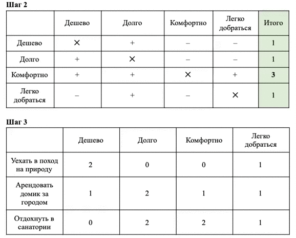

Прием, который поможет принять оптимальное решение
В предыдущем уроке мы научились составлять матрицу влияния и высчитывать вес разных критериев при принятии решения. Однако чтобы у вас появилась мотивация реализовать принятое решение, это решение должно получать эмоциональный отклик внутри вас. В действительности эмоциональный отклик даже значимее рациональных доводов, и в уроке мы разберем, как учитывать это при принятии решений.
Даже если мы принимаем решение исходя из верных критериев, этого недостаточно, чтобы достичь цели. Однажды я вела группу по снижению веса, где мы очень четко сформулировали цель по SMART. Цель была актуальна для участников, но через 3 месяца к ней приблизился всего один человек. Проблема в том, что остальные участники приняли рациональное решение похудеть, но не подкрепили это решение эмоциями. Эмоции – топливо наших поступков, а машина не поедет без топлива, как бы хорошо мы ее не сконструировали.
Я расскажу об универсальной технике принятия решений, которая сочетает эмоционально-мотивационную составляющую и рациональный анализ ситуации. В технике четыре простых шага, которые мы разберем на примере принятия решения об отпуске. В конце урока вы сами проделаете эти четыре шага, оценивая, нужно ли вашей компании входить в один из трендов, о которых идет речь в этой программе.
Шаг 1. Выписать все возможные критерии, на основе которых будете принимать решение. Первый этап напрямую связан с эмоциональной составляющей решения, поэтому дайте себе свободу и выпишите все важные вам критерии. Допустим, в отпуске нам важно: отдохнуть дешево, отдохнуть подольше, провести время с комфортом, легко добраться до пункта назначения.
В действительности критериев может быть гораздо больше, и выписать нужно все. Просто спрашивайте себя, чего вы хотите – пожить в лесу с палаткой, заселиться в санаторий и не выходить из него, и пр.
Шаг 2. Выделить главные критерии с наибольшим весом влияния. В предыдущем уроке мы говорили, что критерии принятия решения связаны между собой. Но если мы попытаемся сразу выделить один главный критерий даже из четырех, у нас это не получится. Человек не может одновременно сравнивать больше двух критериев. Поэтому построим матрицу влияния и попарно сравним каждый критерий.
| Дешево | Долго | Комфортно | Легко добраться | Итого | |
| Дешево | ✕ | + | – | – | 1 |
| Долго | + | ✕ | – | – | 1 |
| Комфортно | + | + | ✕ | + | 3 |
| Легко добраться | – | + | – | ✕ | 1 |
Как и в матрице из прошлого урока, тот критерий, который мы сравниваем, у нас в левом столбце. А тот, с которым сравниваем – в верхней строке. Начнем со стоимости отпуска – критерия «дешево». Стоимость отпуска не имеет смысла сравнивать с самой собой, поэтому эту ячейку мы пропускаем.
Далее сравниваем желание отдохнуть дешево и отдохнуть подольше. Здесь мы пытаемся понять, важнее ли нам сэкономить и отдохнуть поменьше, или же мы готовы отдохнуть подольше и потратить больше. Если мы готовы сократить отпуск, чтобы снизить его стоимость, в ячейке ставим плюс в пользу дешевизны.
Затем сравниваем дешевизну с комфортом. Если ради экономии мы готовы потерпеть в отпуске неудобства, ставим плюс. Если готовы доплатить, чтобы насладиться комфортом, ставим минус.
В конце сравниваем бюджет на отпуск и время в пути. Если мы, к примеру, согласны лететь до пункта назначения с тремя пересадками, но при этом дешево, ставим плюс. Если же предпочтем доплатить, но при этом лететь прямым рейсом, ставим минус.
После того, как вы попарно сравните все критерии в оставшихся строках, подсчитайте число плюсов в каждой строке. Чем больше плюсов у критерия, тем он для вас важнее. Мы видим, что в нашем примере важнее всего оказался комфорт, поэтому этот фактор надо учитывать в первую очередь. Если какой-либо фактор не набрал ни одного плюса, его можно вообще не учитывать при принятии решения.
Любопытно, что зачастую люди удивляются результату: важными критериями оказываются те, которые мы считали незначительными.
Дело в том, что при сравнении двух объектов мы не можем обмануть себя: мы четко представляем ситуацию, где один критерий есть, а второго нет. К тому же, на этом шаге мы рационально анализируем те эмоциональные желания, которые указывали в первом шаге, то есть разум и эмоции вступают в некий конфликт.
Шаг 3. Выявить, насколько возможные варианты соответствуют критериям выбора. Дальше приступаем к самой приятной части – к выбору вариантов отпуска. Вариантов может быть много, но обычно при принятии решения мы исходим из двух-трех, которые уже лежат на поверхности. Для примера рассмотрим случай, в котором у нас как раз три варианта.
| Дешево | Долго | Комфортно | Легко добраться | |
| Уехать в поход на природу | 2 | 0 | 0 | 1 |
| Арендовать домик за городом | 1 | 2 | 1 | 1 |
| Отдохнуть в санатории | 0 | 2 | 2 | 1 |
Далее мы сравниваем каждый вариант отпуска с важными для нас критериями. Для этого в каждой ячейке укажем один из трех возможных вариантов:
- 0 – не соответствует,
- 1 – частично соответствует,
- 2 – полностью соответствует.
Рассмотрим первый вариант – поезда на природу в формате похода. Это дешево, поэтому ставим цифру 2. Если это дикие условия в лесу с палаткой, долго в таком походе побыть не удастся – ставим 0. Никакого комфорта тут не будет, поэтому тоже ставим 0. Зато выехать за город и разбить палатку не так уж и долго, поэтому вписываем 1.
Аналогичным образом расписываем два оставшихся варианта, после чего переходим к следующему шагу – складывать цифры на этот раз не нужно.
Шаг 4. Соединить результаты рациональной и эмоциональной работы. Последний шаг соединяет результаты рациональной и эмоциональной работы. В предыдущем шаге мы определили, насколько тот или иной вариант соответствует важным для нас критериям. Во втором шаге мы определили, насколько важен каждый критерий. Все, что сейчас остается – по очереди перемножить то, насколько критерий соответствует варианту отпуска, с важностью этого критерия.
В примере используем таблицу из третьего шага, верхнюю строку которой мы дополнили весом каждого критерия из второго шага. Как мы помним, во втором шаге все критерии, кроме комфорта, получили цифру 1, а комфорт – 3. После этого все, что нам остается – по очереди перемножить то, насколько критерий соответствует варианту отпуска, с важностью этого критерия.
Дешево (важность – 1) | Долго (важность –1) | Комфортно (важность – 3) | Легко добраться (важность – 1) | Итого | |
| Уехать в поход на природу | 2 | 0 | 0 | 1 | 3 |
| Арендовать домик за городом | 1 | 2 | 1 | 1 | 7 |
| Отдохнуть в санатории | 0 | 2 | 2 | 1 | 9 |
Показываем, что на что умножать, на примере первого варианта с поездкой на природу – следите за курсором на гифке ниже.

В первом варианте с выездом на природу получаем формулу: (2*1) + (0*1) + (0*3) + (1*1) = 3. Аналогичным образом подсчитываем цифры для второго варианта с арендой домика: (1*1) + (2*1) + (1*3) + (1*1) = 7. В третьем варианте с отдыхом в санатории получим: (0*1) + (2*1) + (2*3) + (1*1) = 9.
Мы видим, что отдых в санатории максимально соответствует нашим критериям как рационально, так и эмоционально. Это уже не просто математика: мы умножаем рациональную оценку на эмоциональный компонент, и в результате получаем взвешенное решение.
Важно именно умножить друг на друга цифры из разных шагов, а не просто сложить между собой цифры из третьего шага. При сложении мы получили бы числа, которые примерно равны друг другу, и сделать выбор было бы труднее. В нашем примере варианты «арендовать домик» и «отдохнуть в санатории» вообще набрали бы одинаково – по 5 баллов. А после того, как мы провели умножение, вариант с санаторием явно вырвался вперед.
Техника хороша с точки зрения прагматичности, так как одновременно учитывает рациональные доводы и эмоциональный компонент. Зачастую перед тем, как принять решение, мы мыслим исключительно рационально и задаем себе лишь один вопрос: «Как правильно?». Эмоции обычно включаются уже при оценке последствий принятого решения, и часто мы понимаем: то, что случилось, нам не нравится.
Чтобы последствия принятых решений устраивали как рационально, так и эмоционально, заранее пропускайте решения через этот прием. Однако даже если результат вам не понравился, не нужно его обесценивать: каждая ошибка ведет нас к успеху.
Опыт Томаса Эдисона
Многие знают Томаса Эдисона как изобретателя лампы накаливания. Однако к моменту рождения ученого лампочка уже существовала, просто была настолько дорогой, что о серийном производстве не могло идти и речи. Эдисон загорелся идеей сделать лампочку доступным продуктом и долго шел к своей мечте.
В один прекрасный момент он нашел инвесторов и уговорил их вложить деньги в экспериментальную лабораторию. Он уверил их, что найдет решение в течение года. За это время в лаборатории он протестировал около 3 тысяч лампочек, но ни одна из них не соответствовала заданному критерию экономичности.
Эдисон уговорил инвесторов дать ему еще один год, опробовал еще 4 тысячи вариантов, но тоже безрезультатно. Инвесторы возмутились и хотели прекратить финансирование, но Эдисон вновь уговорил не закрывать проект.
Лишь в конце третьего года, после испытаний в общем счете 10 тысяч моделей лампочек, он изобрел ту, которой мы пользуемся до сих пор. Эдисон тогда сказал: «Я не сделал 10 тысяч ошибок, я просто отмел 10 тысяч неподходящих вариантов».
Когда меня спрашивают, как повысить вероятность эффективности проекта, я отвечаю: надо повысить вероятность ошибок в этом проекте. Это важно: принятие решения всегда напрямую связано с риском. Если мы выбираем между вариантами, ни один из которых не несет рисков, мы из руководителей становимся администраторами.
Я бы дополнила свои слова из начала предыдущей лекции и сказала, что главная компетенция руководителя – уметь справляться с последствиями неудачных решений. Если вы готовы нести ответственность за возможные негативные последствия, то вы готовы к любому развитию событий. К прекрасным результатам нас приводит не умение выбирать только правильные решения, а способность преодолевать неудачи и принимать новые решения.